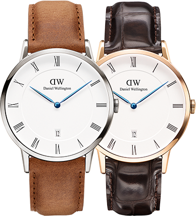

<section class="classic-full-wrapper">
    <section class="classic-hero-wrapper">
        <section class="classic-hero-container">
            
            <aside class="hero-img-content">
                <p class="classic-hero-text1">Dapper</p>
                <p class="classic-hero-40mm">38mm</p>
                <p class="classic-hero-italic">It is an effortless piece made for every adventure.</p>


                <p class="classic-hero-more" ng-click="showme = !showme" ng-hide="showme">Read More</p>
                <a id="up-arrow-style" ng-click="showme = !showme" ng-hide="showme"><i class="fa fa-angle-down" aria-hidden="true"></i></a>

            </aside>
        </section>
    </section>

    <section class="readmore-wrapper" ng-show="showme">
        <section class="readmore-container">
            <aside id="style-readmore-img">
                
            </aside>

            <aside class="style-readmore-text">
                <p class="classic-toggle-text">The Dapper is a sophisticated and polished timepiece that goes wherever the day
                    <br> takes you. A slim profile in silver or rose gold is paired with elegant details like <br> deep blue hands, Roman numerals and a date display. Imbued with a luxurious
                    <br> feeling, it is an effortless watch that is always ready for an adventure.</p>

                <aside class="close-style">
                    <a id="close-arrow-style" ng-click="showme = !showme"><i class="fa fa-angle-up" aria-hidden="true"></i></a>
                    <span class="classic-hero-close" ng-click="showme = !showme">Close</span>
                </aside>
            </aside>
        </section>
    </section>
</section>